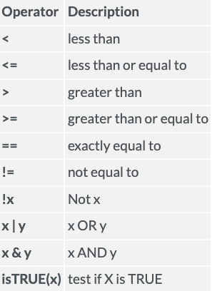

Introduction
Welcome! Now that you understand how to use packages, functions, and how to import data into R, we can start to get familiar with basics of data in a data science sense. The purpose of this tutorial is to get you familiar with data structures, data types, and accessing data in R.
This tutorial will cover the nuts and bolts of data within R in terms of knowing the different data types and structures and understanding how to access specific elements within a data object. These concepts are fundamental and essential in gearing us up to learn about data manipulation in the next module. We will be covering the following in this tutorial:
- Data types
- Data structure
- Data indexing
Data Types
Data types are the types of data supported and can be used with R and within RStudio. While there are different data types that can be used within R, we will cover the 4 basic data types:
- Numeric
- Integer
- Character
- Logical
Numeric
Numeric data types are real number values that are allowed to have decimal points and are not considered whole numbers.
# Numeric atomic vector
grade1 <- 93.51
typeof(grade1)## [1] "double"str(grade1)## num 93.5In this example above, we are saving the numerical value 93.5 to an
object called grade1. When you run the line of code
grade1, you can see it will give you the value of 93.5.
Additionally, we can use the typeof() function to check the
data type in which the output says “double” which is true since all
numeric data types are considered double numerical values since they are
allowed to have decimal points. We can also use str()
function to check the structure of the object grade1 which
the output says it’s num, a numerical data type, with the
value 93.5 inside of the object.
While we used 93.5 to demonstrate a numeric data type, 93 is also considered a numeric data type which is synonymous as a double numerical value even though this value does not have specified decimal places. Check out the example below :smiley:
# Numeric atomic vector
grade2 <- 93
grade2## [1] 93typeof(grade2)## [1] "double"str(grade2)## num 93You’re probably wondering why 93 is considered a double numerical value and not an whole number integer. That’s a good curiosity to have which leads us to discuss integer values.
Integer
Integer data types are real numbers that are not allowed to have
decimal points as opposed to numeric data types. Specifically, the
suffix L is used to specify integer data.
integer <- 256L
integer## [1] 256typeof(integer)## [1] "integer"str(integer)## int 256As you can see when we use typeof() and
str(), the output tells us that the object
integer is an integer data type. You will seldom use
integer data types in your work (probably never), however, we wanted to
provide you a brief review of this data type.
Character
Character data types are aptly named as they are data types that are
used to specify data that are characters and string values. String
values are a set of character data while a character value is a single
character. For example, 'T' is considered a single
character while "Theo" is considered a string. Going one
more step in this distinction "Hi my name is Theo" is also
considered a string of character values. Strings can be represented
through the use of single quotes '' or double quotes
"". As a common rule, '' is used for character
variables and "" is used for string variables.
name <- "Theo"
name## [1] "Theo"typeof(name)## [1] "character"str(name)## chr "Theo"When we use typeof() and str(), the output
tells us that the object name is an character data type
(string in this case).
Logical
Yay!We made it to the final data type: logical data. Logical data
types in R are known as boolean data types. Logical data can only have
two values: TRUE and FALSE.
logical1 <- TRUE
logical1## [1] TRUEtypeof(logical1)## [1] "logical"str(logical1)## logi TRUElogical2 <- FALSE
logical2## [1] FALSEtypeof(logical2)## [1] "logical"str(logical2)## logi FALSEAdditionally, logical data types can also be represented as
T and F which is shorthand for
TRUE and FALSE. R accepts both form of logical
data types, however, it’s standard practice to use TRUE and
FALSE rather than T and F.
Data Structures
Now that you know about the common data types, we can talk about how we can store these different types of data in R which leads us to talk about data structures.
A data structure is a format in how data is organized and stored in order to be efficiently accessed. Our focus will be on the base data structures within R: vectors, arrays, lists, and data frames. There are two attributes that define each of these data structures: 1) dimensionality and 2) content type.
Data structures can be organized by dimensionality (they are either 1-dimensional, 2-dimensional, N-dimensional (e.g., however many dimensions you want to make the structure) and whether or not the content stored inside the structures are homogeneous (i.e., all data contents must be the same type) or heterogeneous (i.e., all contents can be different types)). Based on these two attributes that define data structures, there are five common data structures used within R and data science in general. Table 1 outlines these five different types and classifies their two attributes.
| Dimension | Homogenous | Heterogenous |
|---|---|---|
| 1d | Atomic vector | List |
| 2d | Matrix | Data frame |
| nd | Array |
Here are the 5 common data structures outlined below:
- Atomic vector: Homogeneous and 1-dimensional
- List: Heterogeneous and 1-dimensional
- Matrix: Homogeneous and 2-dimensional
- Array: Homogeneous and =< 2-dimensional
- Data frame: Heterogeneous and 2-dimensional
Atomic vector
There are four common types of atomic vectors: numeric, integer, logical, and character.
Numeric atomic vectors
Numeric atomic vectors can handle numerical values that are not considered whole numbers.Go ahead and use the exercise below to make a numeric vector.# Numeric atomic vector
num_vector <- c(1.5, 9.7, 2)
num_vector[1] 1.5 9.7 2.0Note: For the lines of code in the exercise above, remember that the
arrow “<-” is assigning ‘something’ to an object. In this case, we
are assigning/storing a vector to an object called
num_vector. When we only run the line of code with the
object num_vector we are able to see/access the stored data
inside of the object which is a vector in this case.
Another note: Whenever we want to make an object that contains more
than one value, we have to use the `c() and separate each
value with a comma. The c() stands for combine. So in the
example above, we are combining the numerical values of 1.4, 9.7, and 2
and assigning/storing it to an object (which in this case is a vector)
called num_vector.
Integer atomic vectors
Integer atomic vectors can handle numerical values that are considered whole integers. TheL after each numerical value provided
in the exercise below tells R that these values are integers and not
numeric. Go ahead and use the exercise below to create an atomic vector
that is storing integers. What do you think your output will be when you
run the int_vector line of code?
# Integer atomic vector
int_vector <- c(2L, 5L, 9L)
int_vector[1] 2 5 9Logical atomic vectors
Logical atomic vectors can handle logical values. In R (and other programming languages), logical vectors are expressed byTRUE, FALSE, T, and
F. Logical values will come in handy when we talk about
logical comparisons later in this tutorial :-) Go ahead and use the
exercise below to create a logical vector.
# Logical atomic vector
log_vector <- c(TRUE, FALSE, T, F)
log_vector[1] TRUE FALSE TRUE FALSECharacter atomic vectors
Lastly, character atomic vectors can handle character values in R. Character values can be anything that is wrapped in quotations (this is also known as a string). Go ahead and use the exercise below to create a character vectors with four unique strings stores inside (in this case, these are names of schools).# Character atomic vector
char_vector <- c("Bell Middle", "Kim High", "South Elementary")
char_vector[1] "Bell Middle" "Kim High" "South Elementary"Atomic vector overview
As you can see in the different examples provided above, we created four different types of atomic vectors that were 1-dimensional (a single row) and each stores the same data type (homogeneous).
Lists
Lists are like atomic vectors but allow elements inside of the list
to be heterogeneous elements instead of homogeneous. We can make a list
by using list() instead of c(). The exercise
below provides an example of a list which contains different elements.
We can check the structure of the list object by using
str().
list_example <- list(100:105, "apple", c(TRUE, FALSE, FALSE), c(99.8, 87.0, 88.3))
str(list_example)List of 4
$ : int [1:6] 100 101 102 103 104 105
$ : chr "apple"
$ : logi [1:3] TRUE FALSE FALSE
$ : num [1:3] 99.8 87 88.3Let’s walk through the code in the exercise. First, we are using the
function list() to create an object that’s a list. Within
this function, we are providing different arguments to tell R what to
include in the list. The first argument given 100:105 tells
R to create the first element in the list which includes numbers from
100 to 105. The : notation between 100 and 105 tells R to
include values between those two numbers, thus providing the following
output for the first element within this list: 100, 101, 102, 103, 104,
105. The second argument tells R to create the second element in this
list which includes the character type apple. The third
argument tells R to create the third element in this list which are
logical values. The last argument tells R to create the fourth element
in this list which includes 99.8, 87.0, and 88.3.
When we use the str() function to check the structure of
the list, the output tells us that the object list_example
is a list that contains 4 elements and provides us with the data types
for each of these elements as well as the contents inside of each
element.
Matrix
Matrix are similar to atomic vectors is that they only allow elements
to be homogeneous but they are 2-dimensional objects rather than
1-dimensional. We can make a matrix by using matrix() and
providing the elements to be included in the matrix and by specifying
the dimensions of the matrix by using ncol and
nrow. The exercise below provides an example of a matrix
which contains all numeric elements.
matrix_example <- matrix(1:9, ncol=3, nrow = 3)
matrix_example [,1] [,2] [,3]
[1,] 1 4 7
[2,] 2 5 8
[3,] 3 6 9In walking through the code, we are using the function
matrix() to create an object that’s a matrix. The first
argument provided in the function, we are telling R that we want to
include numbers 1 through 9 in the matrix (all numeric) and that we want
to have 3 columns and 3 rows. So when we run matrix_example
on the second line, you can see that a matrix is produced with the
values 1 through 9 and is organized by 3 columns and 3 rows.
Array
Arrays are similar to a matrix (or matrices) in the sense that they
store homogeneous elements but they allowed to have more than 2
dimensions if needed/necessary. We can make an array by using
array(). The exercise below provides an example of an array
with 3 dimensions.
# 4 rows,2 columns and 3 arrays
array_example <- array(c(1,2,3,4,5,6, 60, 18, 12, 13, 14, 19), dim = c(4,2,3))
array_example, , 1
[,1] [,2]
[1,] 1 5
[2,] 2 6
[3,] 3 60
[4,] 4 18
, , 2
[,1] [,2]
[1,] 12 1
[2,] 13 2
[3,] 14 3
[4,] 19 4
, , 3
[,1] [,2]
[1,] 5 12
[2,] 6 13
[3,] 60 14
[4,] 18 19When walking through the code, we are using the function
array() to create an object that’s an array. The first
argument provided in the function, we are giving R the elements we want
displayed in the array. These are all numeric (homogeneous) elements.
The second argument provided in the function array() is the
dimensions needed for the array to be created (e.g.,
dim =). So for dim = c(4, 2, 3) we are saying
we want each dimension of the array to have 4 rows, 2 columns, and 3
dimensions. When you run the line of code array_example you
can see that three dimensions are provided (matrices) and each of these
have 4 rows and 2 columns. The placement of the numerical elements
c(1,2,3,4,5,6, 60, 18, 12, 13, 14, 19) starts in the first
matrix (, , 1) at the first row and first column and
continues to place the numerical elements provided in a row wise manner
until all numerical elements have been listed (the last value (19)
provided in the second matrix in the fourth row, first column. But in
order to continue to build the array as specified by the dimensions
given in the dim argument, R continues to starts to loop
the numerical elements provided by starting again at placing 1 in the
second matrix in the first row, second column and continues on until the
full array is created as specified.
Data frames
Yay!:tada: We made it to the final data structure: data frames. Data
frames will more than likely be the most common data structure you will
use in the education research field, and is the most common way to store
data in R. Data frames are dimensional (rows and columns) and can store
heterogeneous elements. For data frames, columns are typically variables
and rows are cases/observations. We can make a data frame from scratch
using data.frame(), however, more often than not, you will
have a data file (e.g., .csv) and will read it into R (much like you did
in the past mini module when reading in the hsb data set.). Regardless,
let’s make a data frame in the example below.
# pass these vectors as input to the array.
# 4 rows,2 columns and 3 arrays
class_data <- data.frame (studentid = c(101, 102, 104, 105, 106),
gender = c("Female", "Female", "Male", "Female", "Male"),
test1 = c(98, 82, 85, 97, 92),
mathmajor = c(1, 0, 0, 1, 1)
)
class_dataIn creating the data frame, we specify that the first column will be
student ids, second: gender, third: test 1 score, and fourth: if the
student is a math major. As you can see when you run the line of code
that read class_data the data frame has two dimensions
(rows and columns) and has heterogeneous elements (numerical and
character values).
Data Indexing
Now that we know about data types and data structures, we can now talk about how to access specific values/elements inside of a data structure (this is also referred to as data indexing).
Indexing for Vectors
Vectors are 1 dimensional so if we need to access a certain value/element inside a vector, we need to specify the location of the value we want to extract. Let’s look at the same example we used for character vectors earlier.
char_vector <- c("Bell Middle", "Kim High", "South Elementary")
char_vector[1] "Bell Middle" "Kim High" "South Elementary"Let’s say we want to save the second school name into another object
called hs. We can achieve this by specifying the location
of the second element within char_vector using
[[]].
char_vector <- c("Bell Middle", "Kim High", "South Elementary")
char_vector## [1] "Bell Middle" "Kim High" "South Elementary"hs <- char_vector[[2]]
hs## [1] "Kim High"As you can see in the example above, we access the second element
inside of char_vector through this code
char_vector[[2]] to which we save it to another object
called hs.
After saving Kim High to another object called hs, do
you think Kim High still exists as the second element in
char_vector? Let’s check!
char_vector <- c("Bell Middle", "Kim High", "South Elementary")
char_vector## [1] "Bell Middle" "Kim High" "South Elementary"hs <- char_vector[[2]]
hs## [1] "Kim High"char_vector## [1] "Bell Middle" "Kim High" "South Elementary"Indexing for Lists
Let’s go ahead and try to access certain values in a list! We’re going to use the same example above when we learned about lists. Let’s access the different first two data types specified in this list below.
list_example <- list(100:105, "apple", c(TRUE, FALSE, FALSE), c(99.8, 87.0, 88.3))
list_example## [[1]]
## [1] 100 101 102 103 104 105
##
## [[2]]
## [1] "apple"
##
## [[3]]
## [1] TRUE FALSE FALSE
##
## [[4]]
## [1] 99.8 87.0 88.3list_example[[1]]## [1] 100 101 102 103 104 105list_example[[2]]## [1] "apple"Great! We were able to access the first element of the list that
contained the values 100 - 105 and the second element of the list that
contained the string "apple". Let’s try accessing one value
in this list. Specifically, let’s save the value 103 to a new object
called quiz1.
list_example <- list(100:105, "apple", c(TRUE, FALSE, FALSE), c(99.8, 87.0, 88.3))
list_example## [[1]]
## [1] 100 101 102 103 104 105
##
## [[2]]
## [1] "apple"
##
## [[3]]
## [1] TRUE FALSE FALSE
##
## [[4]]
## [1] 99.8 87.0 88.3quiz1 <- list_example[[1]][4]
quiz1## [1] 103In the code list_example[[1]][4] we tell R to access the
first element of list_example which is a set of numerical
values by using [[1]] then we tell R to grab the fourth
value within the first element (set of numerical values 100 - 105) by
using [4].
Indexing for Matrices
Great! So far we have only accessed values in 1-dimensional data structures so let’s try accessing values in two dimensional data structures. Specifically, let’s use the example below to access all values within column 2
matrix_example <- matrix(1:9, ncol=3, nrow = 3)
matrix_example## [,1] [,2] [,3]
## [1,] 1 4 7
## [2,] 2 5 8
## [3,] 3 6 9matrix_example[, 2]## [1] 4 5 6Good job! Let’s use the same example but access all values in the second row.
matrix_example <- matrix(1:9, ncol=3, nrow = 3)
matrix_example [,1] [,2] [,3]
[1,] 1 4 7
[2,] 2 5 8
[3,] 3 6 9matrix_example[2, ][1] 2 5 8How do you think you would access the value located in the second column and second row? Give it a try below.
matrix_example <- matrix(1:9, ncol=3, nrow = 3)
matrix_example## [,1] [,2] [,3]
## [1,] 1 4 7
## [2,] 2 5 8
## [3,] 3 6 9Here’s the answer!
matrix_example <- matrix(1:9, ncol=3, nrow = 3)
matrix_example## [,1] [,2] [,3]
## [1,] 1 4 7
## [2,] 2 5 8
## [3,] 3 6 9matrix_example[2, 2]## [1] 5Indexing for Arrays
Since arrays are similar to matrices (the only difference is arrays can support more than 2 dimensions), we won’t cover the specifics on indexing for arrays. Which is perfect since we want to dedicate more time and training to indexing and accessing different values within data frames since this is the data structure you will more than likely use the most.
Indexing for Data Frames
Yay!:tada: We made it to the portion of this module where we will learn how to index and access data within data frames. Let’s use the data frame we created earlier in the example below.
class_data <- data.frame (studentid = c(101, 102, 104, 105, 106),
gender = c("Female", "Female", "Male", "Female", "Male"),
test1 = c(98, 82, 85, 97, 92),
mathmajor = c(1, 0, 0, 1, 1)
)
class_dataAccessing names of columns and rows
If we have a data frame, we can easily view the column names without
opening up the data frame itself by using names() or
colnames().
names(class_data)## [1] "studentid" "gender" "test1" "mathmajor"colnames(class_data)## [1] "studentid" "gender" "test1" "mathmajor"If needed, we can also get the rownames by using
rownames().
rownames(class_data)## [1] "1" "2" "3" "4" "5"Additionally, we can do a bit of manipulation to the data frame. The
column names of the class_data data frame are already
named, but what if we wanted to change the name of the colnames to
id, sex, test,
major? We can accomplish this by using
colnames() and saving the dataframe back into the original
data frame titled class_data.
colnames(class_data) <- c("id", "sex", "test", "major")
class_dataPlease be careful if you alter data and save it back into the
original data frame (like we did above) because the assignment operator
<- can at times serve as a save function. If you wanted
to change the colnames but save this updated data frame as a differently
named object, we can achieve this by saving the changed data frame to
different named data frame.
Let’s take the recently altered class_data data frame
and change the column names back to the original column names but save
it as a data frame called class_data_raw.
class_data_raw <- class_data
colnames(class_data_raw) <- c("studentid", "gender", "test1", "mathmajor")
class_data_rawclass_dataIn the code above, we saved the data frame class_data to
another data frame called class_data_raw. At this point,
the contents inside class_data are identical to
class_data_raw. In the second line, we change the column
names of class_data_raw to studentid,
gender, test1, mathmajor. In the
last two lines of code, we can see that class_data_raw has
the original column names(studentid, gender,
test1, mathmajor) and class_data
has the updated column names (id, sex,
test, major).
Accessing specific elements of a data frame
Since data frames are 2 dimensional structures, we can access specific element(s) within a data frame by specifying the rows and/or column.
Let’s access the test1 grade for studentid
104 using the data frame from our example.
class_data_raw[3, 3]## [1] 85We can also access multiple values as well. Let’s retrieve the
test1 grade for studentid 104 and 106.
class_data_raw[c(3, 5) , 3]## [1] 85 92We can also access only the values within the test1
column from the data frame through the use of indexing by only
specifying the column location but not specifying a specific row.
class_data_raw[, 3]## [1] 98 82 85 97 92Alternatively, if we know the name of the column that we want to
access all values, we can access this column by using the $
notation.
class_data_raw$test1## [1] 98 82 85 97 92Note: R is case sensitive and needs the exact spelling in order to
access specified rows. If you were to use
class_data_raw$Test1 you will either receive an error
message or a NULL value as that column does not exist in
the data frame.
Special Data Type: Factors
Before we close out this sub module, there are two additional topics we wanted to cover that don’t fit neatly into the basic framework outlined above when it comes to data considerations but will be largely helpful for when we get into data wrangling.
The first special topic is understanding factors.
When discussing data types earlier, we noted the following as the four basic data types:
- Numeric - Integer - Character - Logical
When working with education-related data in R, you will also be working with a specific data type called factors. Factors are a special case of character variables that represent categorical variables. For example, you will be working with demographic data that often contains categorical variables such as sex or race/ethnicity. If you are working with a data set, you may have a sex categorical variable that may have a limited number of values (e.g., female, male). This is different from a data set with a variable (or column) of names as a column of names will have numerous different possibilities to where this variable would not be considered a categorical variables (or factor) and is instead just considered a character variable.
We can create a factor variable using factor().
classification <- factor(c("freshman", "sophomore", "junior", "senior"))
classification## [1] freshman sophomore junior senior
## Levels: freshman junior senior sophomoreWe can check the structure of the data using str()
str(classification)## Factor w/ 4 levels "freshman","junior",..: 1 4 2 3In the output above, you can see that R tells us that the object
called classification is a factor with four levels. When
you create factors in R, you automatically defines the factor levels
based on alphabetical order. As you can see in the output, R is labeling
freshman as level 1, sophomore as level 4,
junior as level 2, and senior as level 3.
The ordering of levels in this case is not intuitive so let’s go
ahead and change it! We can reorder the levels of a factor using the
levels argument in the factor() function.
classification <- factor(classification, levels = c("freshman", "sophomore", "junior", "senior"))Let’s check if the reordering was successful.
str(classification)## Factor w/ 4 levels "freshman","sophomore",..: 1 2 3 4Yay, it worked! :)
Convert character strings into factors
More often than not, when you import data into R, it won’t automatically import categorical variables as factors but as strings instead. No worries! We can convert these column variables into factors.
To illustrate this, let’s go ahead and make an object with strings
called school_type.
school_type <- c("private", "public", "charter")
str(school_type)## chr [1:3] "private" "public" "charter"We can convert these strings into factors using the
as.factor() function and check by using the
str() function.
school_type <- as.factor(school_type)
str(school_type)## Factor w/ 3 levels "charter","private",..: 2 3 1Yay! Now you know about factors :)
Special Use: Logical Comparisons
Now that we have covered factors, let’s talk about logical operators and comparisons!
As noted above, we are now familiar with logical data types, but we haven’t discussed logical operators and comparisons. This will come in handy once we get into more advanced data wrangling in the next module.
The chart below shows a cheatsheet of possible logical comparisons that can occur in R.

For example, if we want to know if two objects are equal we can use the following:
1 == 1## [1] TRUEThe output will return the logical operator TRUE.
Here’s another example using values stored in an object:
object1 <- 106
object2 <- 509
object1 > object2## [1] FALSEWe can also use logical comparisons for character values!
"Bob" != "Bobby"## [1] TRUELastly, we can compare values within two lists:
list1 <- c(906, "Juan", 1000, "Gracie")
list2 <- c(906, "juan", 0001, "Gracie")
list1 == list2## [1] TRUE FALSE FALSE TRUEIn the output we can see that the first element in list1
and list1 are equal values, the second element are not
equal (remember, R is case sensitive), third element is not equal, and
the fourth element is equal.
There’s a lot we can do with logical comparisons but we wanted to introduce you to logical comparisons and operators as they will come in handy when we begin to wrangle our data in the next module.
Tasks
Now that you are more acquainted with data types and structures, let’s engage in a task! Please follow the steps outlined below.
- Open the R script you created in the previous submodule (lastname-R-task2) that is saved in your project folder for this course. You should have code written to load the tidyverse and psych libraries and to read in your hsb dataset.Go ahead and run this script to make sure your code works (we are going to pick up where we left off last time).
- Using comments within R, write notes on the names for each of the variables in the hsb dataset.
- Using comments, write notes on the types of data for each variable in the hsb dataset.
- Ensure the following 4 variables are classified as factors: gender,
race, ses, schtype, prog. Save these changes to another data frame
object called
hsbclean. - Change the following column names and save these changes to another
data frame object called
hsbclean.
- schtype -> schooltype
- prog -> program
- socst -> socialst
Note:
You may run into issues in completing the tasks listed above. Please refer to this document as well as the previous Learnr documents. Google is also a great resource when you run into issues in R.
Reflect
Let’s take some time to reflect before moving on. What is one thing that surprised you? What is one thing that confused you? Did you learn anything that might be useful in the type of work you do?